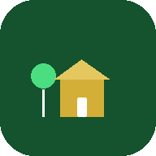

Menghubungkan ke server pemeriksaan…
Bila layar ini muncul terus, isi server.url pada capacitor.config.ts dengan domain Vercel Anda, lalu jalankan npx cap sync android dan bangun ulang APK.
server.url
capacitor.config.ts
npx cap sync android